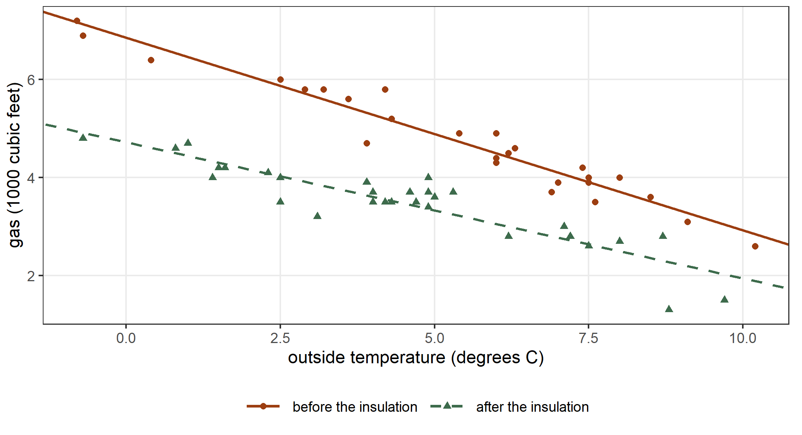
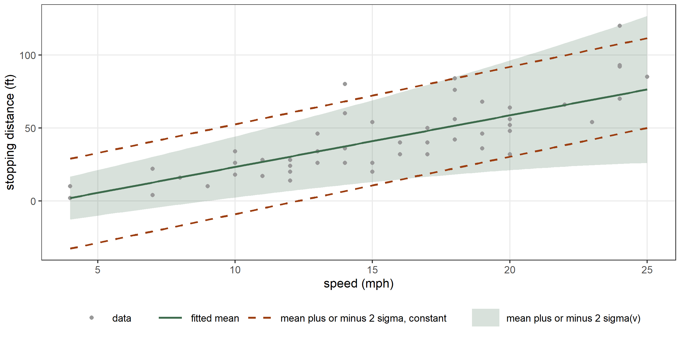
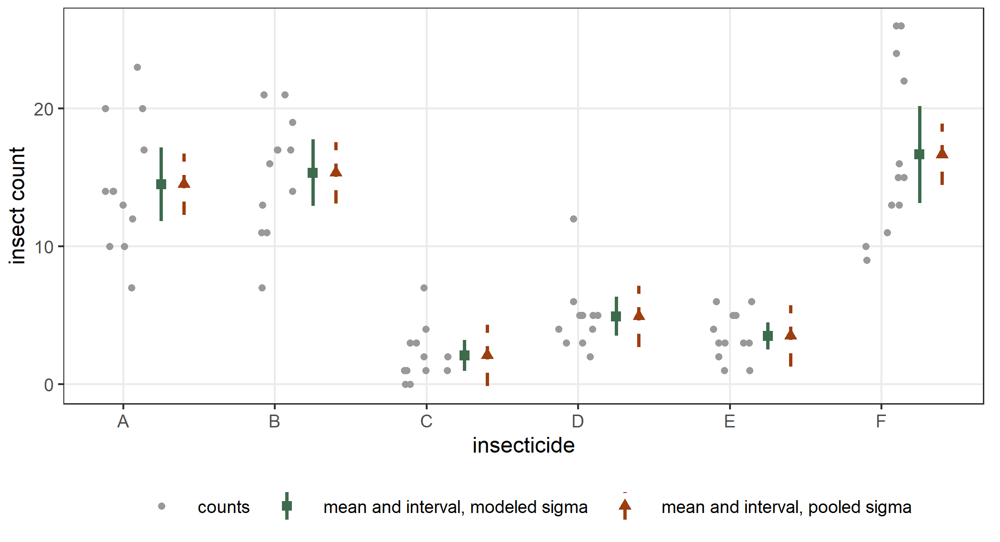

data(whiteside, package = "MASS")
head(whiteside, n = 3)
#> Insul Temp Gas
#> 1 Before -0.8 7.2
#> 2 Before -0.7 6.9
#> 3 Before 0.4 6.4
table(whiteside$Insul)
#>
#> Before After
#> 26 303 Linear models and beyond
This chapter starts the second part of the book, where each chapter takes one class of models. The first class is the gaussian linear model, the model that lm() fits. We fit it with statmod() and compare every number with the output of lm(), and we explain the few places where the two differ. Then we write factors, interactions and contrasts, and we let the variance change with a covariate or with a factor. We end with the three ways of writing the variance of the gaussian distribution.
3.1 The linear model
The data frame whiteside from the MASS package records the weekly gas consumption of a house in south-east England, in thousands of cubic feet, and the average outside temperature of the same week, in degrees Celsius (Hand et al. 1994; Venables and Ripley 2002). The house was observed for 26 weeks before cavity-wall insulation was installed and for 30 weeks after. The factor Insul records the period.
The consumption falls as the temperature rises, and after the insulation the house uses less gas at every temperature. We allow a different straight line in each period: \[
y_i \sim \mathrm{N}(\mu_i, \sigma), \qquad
\mu_i = \beta_0 + \beta_1 t_i + \beta_2 a_i + \beta_3 t_i a_i ,
\] where \(t_i\) is the temperature and \(a_i\) is 1 in the weeks after the insulation and 0 before. The formula Gas ~ Temp * Insul writes this mean in the usual notation of R. We fit the model with statmod() and with lm():
library(statmodels7)
fit_lin <- statmod(Gas ~ Temp * Insul, distrib = gaussian1_distrib(),
data = whiteside)
summary(fit_lin)
#> A statmod fit
#>
#> Call: statmod(formula = Gas ~ Temp * Insul, distrib = gaussian1_distrib(),
#> data = whiteside)
#>
#> Distribution: gaussian1 Observations: 56
#>
#> === mu [identity link]
#>
#> Parametric terms
#> estimate se z p lower upper
#> (Intercept) 6.854 0.136 50.41 < 1e-16 6.587 7.12
#> Temp -0.3932 0.02249 -17.49 < 1e-16 -0.4373 -0.3492
#> InsulAfter -2.13 0.1801 -11.83 < 1e-16 -2.483 -1.777
#> Temp:InsulAfter 0.1153 0.03211 3.591 0.0003298 0.05237 0.1782
#>
#> === sigma [log link]
#>
#> Parametric terms
#> estimate se z p lower upper
#> (Intercept) -1.13 0.09806 -11.52 < 1e-16 -1.322 -0.9379
#>
#> 95% intervals, bayesian variance
#> conditional log-likelihood -14.175512 effective df 5.00
#> cAIC 38.351 cBIC 48.478
#> fitted in 1.75 s
#> inner max |grad|/se 4.6e-15 min eigen 0.034
#> outer max |grad|/se 3.3e-11 min eigen 1
lm_lin <- lm(Gas ~ Temp * Insul, data = whiteside)
summary(lm_lin)
#>
#> Call:
#> lm(formula = Gas ~ Temp * Insul, data = whiteside)
#>
#> Residuals:
#> Min 1Q Median 3Q Max
#> -0.97802 -0.18011 0.03757 0.20930 0.63803
#>
#> Coefficients:
#> Estimate Std. Error t value Pr(>|t|)
#> (Intercept) 6.85383 0.13596 50.409 < 2e-16 ***
#> Temp -0.39324 0.02249 -17.487 < 2e-16 ***
#> InsulAfter -2.12998 0.18009 -11.827 2.32e-16 ***
#> Temp:InsulAfter 0.11530 0.03211 3.591 0.000731 ***
#> ---
#> Signif. codes: 0 '***' 0.001 '**' 0.01 '*' 0.05 '.' 0.1 ' ' 1
#>
#> Residual standard error: 0.323 on 52 degrees of freedom
#> Multiple R-squared: 0.9277, Adjusted R-squared: 0.9235
#> F-statistic: 222.3 on 3 and 52 DF, p-value: < 2.2e-16The model has no penalty, so there is no smoothing parameter and no smooth block. The coefficients of the mean are the same in the two fits:
coef(fit_lin)$mu
#> (Intercept) Temp InsulAfter Temp:InsulAfter
#> 6.8538277 -0.3932388 -2.1299780 0.1153039
coef(lm_lin)
#> (Intercept) Temp InsulAfter Temp:InsulAfter
#> 6.8538277 -0.3932388 -2.1299780 0.1153039For a gaussian response the maximum likelihood estimate of the mean is the least squares estimate, whatever the value of \(\sigma\), so this equality is exact.
The standard deviation
The estimate of \(\sigma\) is also the one of lm():
exp(coef(fit_lin)$sigma)
#> (Intercept)
#> 0.3230042
summary(lm_lin)$sigma
#> [1] 0.3230042Section 2.8 explained why. By default statmod() estimates \(\sigma\) by maximizing the REML criterion, which integrates the \(p\) coefficients of the mean out of the likelihood. For a linear model this gives \(\hat\sigma^2 = \mathrm{RSS}/(n - p)\), the estimate of lm(), where RSS is the residual sum of squares. The maximum likelihood estimate divides by \(n\) and is smaller:
n <- nrow(whiteside)
p <- length(coef(lm_lin))
rss <- sum(residuals(lm_lin)^2)
sqrt(rss / (n - p))
#> [1] 0.3230042
sqrt(rss / n)
#> [1] 0.3112546The variance matrix
The variance matrix of the coefficients of the mean is the one of lm(), \(\hat\sigma^2 (X^\top X)^{-1}\):
V <- vcov(fit_lin)
V_mu <- V[1:4, 1:4]
V_mu
#> mu:(Intercept) mu:Temp mu:InsulAfter mu:Temp:InsulAfter
#> mu:(Intercept) 0.018486202 -0.0027053168 -0.018486202 0.0027053168
#> mu:Temp -0.002705317 0.0005056667 0.002705317 -0.0005056667
#> mu:InsulAfter -0.018486202 0.0027053168 0.032433027 -0.0050508961
#> mu:Temp:InsulAfter 0.002705317 -0.0005056667 -0.005050896 0.0010311886
vcov(lm_lin)
#> (Intercept) Temp InsulAfter Temp:InsulAfter
#> (Intercept) 0.018486202 -0.0027053168 -0.018486202 0.0027053168
#> Temp -0.002705317 0.0005056667 0.002705317 -0.0005056667
#> InsulAfter -0.018486202 0.0027053168 0.032433027 -0.0050508961
#> Temp:InsulAfter 0.002705317 -0.0005056667 -0.005050896 0.0010311886
all.equal(target = unname(vcov(lm_lin)), current = unname(V_mu))
#> [1] TRUEThe matrix V has one more row and one more column, for the intercept of \(\log\sigma\). The estimates of the mean and of \(\sigma\) carry separate information, so the covariances between that coefficient and the others are zero, as in Section 1.4:
V[5, ]
#> mu:(Intercept) mu:Temp mu:InsulAfter mu:Temp:InsulAfter
#> 0.000000000 0.000000000 0.000000000 0.000000000
#> sigma:(Intercept)
#> 0.009615385Tests and intervals
The estimates and the standard errors are the same, so the column z of summary(fit_lin) holds the same numbers as the column t value of summary(lm_lin). The p-values differ, because the two functions compare the statistic with different distributions. lm() uses the \(t\) distribution with \(n - p\) degrees of freedom. For a gaussian linear model this distribution is exact: the estimate divided by its standard error has exactly this distribution when the coefficient is zero. statmod() uses the standard gaussian distribution for every model. This is the distribution of the statistic when \(n\) is large, and it is the only reference that holds for every family and every penalty that statmod() fits. We recompute both p-values from the estimates and the standard errors:
ci_lin <- confint(fit_lin, parm = c("mu:(Intercept)", "mu:Temp",
"mu:InsulAfter", "mu:Temp:InsulAfter"))
z <- ci_lin$estimate / ci_lin$se
z
#> [1] 50.409146 -17.487358 -11.827185 3.590665
2 * pnorm(q = -abs(z))
#> [1] 0.000000e+00 1.788578e-68 2.824567e-32 3.298358e-04
2 * pt(q = -abs(z), df = n - p)
#> [1] 7.997414e-46 1.976009e-23 2.315921e-16 7.306852e-04
summary(lm_lin)$coefficients[, "Pr(>|t|)"]
#> (Intercept) Temp InsulAfter Temp:InsulAfter
#> 7.997414e-46 1.976009e-23 2.315921e-16 7.306852e-04With 52 degrees of freedom the two distributions are close, and the p-values differ visibly only for the interaction, where they are 0.00033 and 0.00073. The same holds for the intervals. confint() of statmod() uses the quantile 1.960 of the standard gaussian distribution, and confint() of lm() uses the quantile 2.007 of the \(t\) distribution, so its intervals are wider by the ratio of the two:
ci_lin
#> parameter term coefficient estimate se
#> mu:(Intercept) mu linpar (Intercept) 6.8538277 0.13596397
#> mu:Temp mu linpar Temp -0.3932388 0.02248703
#> mu:InsulAfter mu linpar InsulAfter -2.1299780 0.18009172
#> mu:Temp:InsulAfter mu linpar Temp:InsulAfter 0.1153039 0.03211212
#> lower upper
#> mu:(Intercept) 6.58734321 7.1203122
#> mu:Temp -0.43731260 -0.3491650
#> mu:InsulAfter -2.48295131 -1.7770048
#> mu:Temp:InsulAfter 0.05236526 0.1782425
confint(lm_lin)
#> 2.5 % 97.5 %
#> (Intercept) 6.58099603 7.1266594
#> Temp -0.43836236 -0.3481153
#> InsulAfter -2.49135850 -1.7685976
#> Temp:InsulAfter 0.05086618 0.1797416
qt(p = 0.975, df = n - p) / qnorm(p = 0.975)
#> [1] 1.023818The log-likelihood
The log-likelihood is where the two fits differ most. logLik() of statmod() evaluates the gaussian density at the REML estimate of \(\sigma\). logLik() of lm() evaluates it at the maximum likelihood estimate \(\sqrt{\mathrm{RSS}/n}\), where the log-likelihood reaches its maximum. We compute both with dnorm():
logLik(fit_lin)
#> 'log Lik.' -14.17551 (df=5)
logLik(lm_lin)
#> 'log Lik.' -14.10049 (df=5)
mu_hat <- fitted(lm_lin)
sum(dnorm(x = whiteside$Gas, mean = mu_hat, sd = sqrt(rss / (n - p)),
log = TRUE))
#> [1] -14.17551
sum(dnorm(x = whiteside$Gas, mean = mu_hat, sd = sqrt(rss / n), log = TRUE))
#> [1] -14.10049Both values count five parameters, the four coefficients and \(\sigma\), so AIC() gives slightly different values for the two fits:
AIC(fit_lin)
#> [1] 38.35102
AIC(lm_lin)
#> [1] 38.20098The REML criterion that statmod() maximized is the restricted log-likelihood of lm():
logLik(fit_lin, type = "marginal")
#> 'log Lik.' -23.65996 (df=5)
logLik(lm_lin, REML = TRUE)
#> 'log Lik.' -23.65996 (df=5)3.2 Factors, interactions and contrasts
A formula in statmod() codes factors and interactions in the same way as a formula in lm(). By default R codes a factor with treatment contrasts: the first level is the reference, and each other level gets a column that is 1 for that level and 0 otherwise. In fit_lin the reference level of Insul is Before, so the coefficients mean the following. The intercept and the coefficient of Temp are the intercept and the slope of the line before the insulation. The coefficient InsulAfter is the change in the intercept after the insulation, and Temp:InsulAfter is the change in the slope.
We can also write the model so that each period gets its own intercept and its own slope. The formula Gas ~ 0 + Insul + Insul:Temp removes the global intercept, so each level of Insul gets an intercept column, and it gives each level a slope:
fit_sep <- statmod(Gas ~ 0 + Insul + Insul:Temp,
distrib = gaussian1_distrib(), data = whiteside)
coef(fit_sep)$mu
#> InsulBefore InsulAfter InsulBefore:Temp InsulAfter:Temp
#> 6.8538277 4.7238497 -0.3932388 -0.2779350This is the same model written with other coefficients. The intercept after the insulation is \(\hat\beta_0 + \hat\beta_2\), the slope after the insulation is \(\hat\beta_1 + \hat\beta_3\), and the fitted values are the same:
b <- coef(fit_lin)$mu
b[["(Intercept)"]] + b[["InsulAfter"]]
#> [1] 4.72385
b[["Temp"]] + b[["Temp:InsulAfter"]]
#> [1] -0.277935
max(abs(fitted(fit_lin) - fitted(fit_sep)))
#> [1] 8.881784e-16
Figure 3.1 shows the two lines. After the insulation the line is lower and less steep, so the house saves more gas in cold weeks than in warm ones.
Other contrasts
Other contrasts give other coefficients for the same model. With sum contrasts the column of a two-level factor is \(+1\) for the first level and \(-1\) for the second. The intercept and the slope are then the averages of the two periods, and the coefficients of Insul are half the differences between the two periods. In lm() we choose the contrasts with the argument contrasts. In statmod() the columns of the formula that are not model terms, here Temp, Insul and their interaction, form one parametric block, and we pass its contrasts with the argument linpar_control:
fit_sum <- statmod(Gas ~ Temp * Insul, distrib = gaussian1_distrib(),
data = whiteside,
linpar_control = linpar_options(
contrasts = list(Insul = "contr.sum")))
coef(fit_sum)$mu
#> (Intercept) Temp Insul1 Temp:Insul1
#> 5.78883868 -0.33558689 1.06498902 -0.05765194
lm_sum <- lm(Gas ~ Temp * Insul, data = whiteside,
contrasts = list(Insul = "contr.sum"))
coef(lm_sum)
#> (Intercept) Temp Insul1 Temp:Insul1
#> 5.78883868 -0.33558689 1.06498902 -0.05765194The intercept 5.7888 is the average of the two intercepts of fit_sep, and Insul1 is half their difference:
(bs[["InsulBefore"]] + bs[["InsulAfter"]]) / 2
#> [1] 5.788839
(bs[["InsulBefore"]] - bs[["InsulAfter"]]) / 2
#> [1] 1.064989The same block can be written explicitly with the term linpar(), which takes a one-sided formula and the same two options. The intercept belongs to the formula of the model: when the formula has one, linpar() drops the column (Intercept) of its own design after coding the factors. So the next model has the columns of lm(Gas ~ Temp * Insul), with sum contrasts:
fit_lp <- statmod(Gas ~ linpar(~ Temp * Insul,
contrasts = list(Insul = "contr.sum")),
distrib = gaussian1_distrib(), data = whiteside)
coef(fit_lp)$mu
#> (Intercept) Temp Insul1 Temp:Insul1
#> 5.78883868 -0.33558689 1.06498902 -0.05765194Writing linpar() explicitly is useful when a model needs two parametric blocks with different options, or to give a block a label with the argument label.
Many levels
A factor with many levels gives a design matrix that is mostly zeros: each row has a 1 in the column of its level and 0 in all the others. Such a matrix can be stored sparse, keeping only its nonzero entries, and the products that the fit needs then cost much less. We simulate the weekly sales of a product in 200 shops, 2000 weeks in all, with a price that changes from week to week and a level of its own for each shop:
set.seed(3)
shops <- data.frame(
shop = factor(sample(sprintf("s%03d", 1:200), size = 2000, replace = TRUE)),
price = runif(n = 2000, min = 1, max = 5))
shop_level <- rnorm(n = 200)
shops$sales <- 10 - 1.5 * shops$price + shop_level[as.integer(shops$shop)] +
rnorm(n = 2000)The argument sparse of linpar_options() chooses the storage of the parametric block. We fit the model with a dense and with a sparse design and time the two fits:
t_dense <- system.time(
fit_dense <- statmod(sales ~ price + shop, distrib = gaussian1_distrib(),
data = shops,
linpar_control = linpar_options(sparse = FALSE)))
t_sparse <- system.time(
fit_sparse <- statmod(sales ~ price + shop, distrib = gaussian1_distrib(),
data = shops,
linpar_control = linpar_options(sparse = TRUE)))
t_dense[["elapsed"]]
#> [1] 1.56
t_sparse[["elapsed"]]
#> [1] 0.39
class(model.matrix(fit_dense))
#> [1] "matrix" "array"
class(model.matrix(fit_sparse))
#> [1] "dgCMatrix"
#> attr(,"package")
#> [1] "Matrix"
max(abs(coef(fit_dense)$mu - coef(fit_sparse)$mu))
#> [1] 2.220446e-15The two fits give the same coefficients, and the sparse fit is faster. The function model.matrix() returns the design of an equation, which is a dgCMatrix of the Matrix package in the sparse fit. When we do not set sparse, statmod() chooses the storage from the size of the design: it builds the block sparse when the number of rows times the number of columns coded from factors exceeds \(10^5\). Here that product is about \(2000 \times 200 = 4 \times 10^5\), so the default fit is sparse too:
fit_shops <- statmod(sales ~ price + shop, distrib = gaussian1_distrib(),
data = shops)
class(model.matrix(fit_shops))
#> [1] "dgCMatrix"
#> attr(,"package")
#> [1] "Matrix"3.3 A variance that changes
The linear model assumes the same variance for every observation. When the spread of the data changes with a covariate, we give \(\log\sigma\) an equation of its own, as we did with a smooth function in Section 1.8. Here the equation is linear. We use two data sets from the datasets package of R.
A variance that changes with a covariate
The data frame cars gives the speed of 50 cars, in miles per hour, and the distance that each car needed to stop, in feet (Ezekiel 1930). Figure 3.2 shows that the distances spread out as the speed grows. We model the mean and the logarithm of the standard deviation as straight lines in the speed \(v_i\): \[
y_i \sim \mathrm{N}(\mu_i, \sigma_i), \qquad
\mu_i = \beta_0 + \beta_1 v_i, \qquad
\log\sigma_i = \gamma_0 + \gamma_1 v_i .
\] This is the regression with multiplicative heteroscedasticity of Harvey (1976). We fit it, and for comparison the model with a constant standard deviation:
fit_c1 <- statmod(dist ~ speed | sigma ~ speed,
distrib = gaussian1_distrib(), data = cars)
fit_c0 <- statmod(dist ~ speed, distrib = gaussian1_distrib(), data = cars)
summary(fit_c1)
#> A statmod fit
#>
#> Call: statmod(formula = dist ~ speed | sigma ~ speed, distrib = gaussian1_distrib(),
#> data = cars)
#>
#> Distribution: gaussian1 Observations: 50
#>
#> === mu [identity link]
#>
#> Parametric terms
#> estimate se z p lower upper
#> (Intercept) -12.12 4.75 -2.552 0.0107 -21.43 -2.814
#> speed 3.539 0.359 9.858 <1e-16 2.835 4.242
#>
#> === sigma [log link]
#>
#> Parametric terms
#> estimate se z p lower upper
#> (Intercept) 1.761 0.3729 4.723 2.326e-06 1.03 2.492
#> speed 0.05857 0.02313 2.533 0.01131 0.01325 0.1039
#>
#> 95% intervals, bayesian variance
#> conditional log-likelihood -203.102705 effective df 4.00
#> cAIC 414.205 cBIC 421.854
#> fitted in 110 ms
#> inner max |grad|/se 1.8e-16 min eigen 0.079
#> outer max |grad|/se 2.1e-09 min eigen 0.038By default the criterion is REML. It integrates the two coefficients of the mean and estimates \(\gamma_0\) and \(\gamma_1\), which is the REML estimation of a variance regression of Verbyla (1993). The function gls() of the nlme package fits the same model (Pinheiro and Bates 2000). Its variance function varExp(form = ~ speed) writes the variance as \(\sigma^2 \exp(2\delta v_i)\), so its standard deviation is \(\sigma\exp(\delta v_i)\), and its logarithm is our equation with \(\gamma_0 = \log\sigma\) and \(\gamma_1 = \delta\):
library(nlme)
gls_c1 <- gls(dist ~ speed, data = cars, weights = varExp(form = ~ speed),
method = "REML")
coef(gls_c1)
#> (Intercept) speed
#> -12.12346 3.53889
log(gls_c1$sigma)
#> [1] 1.76109
coef(gls_c1$modelStruct$varStruct, unconstrained = FALSE)
#> expon
#> 0.05857306
coef(fit_c1)
#> $mu
#> (Intercept) speed
#> -12.123472 3.538891
#>
#> $sigma
#> (Intercept) speed
#> 1.7610929 0.0585729The two fits agree, and the REML criterion that statmod() maximized is the restricted log-likelihood of gls():
logLik(fit_c1, type = "marginal")
#> 'log Lik.' -201.6767 (df=4)
logLik(gls_c1)
#> 'log Lik.' -201.6767 (df=4)The estimated standard deviation is 7.4 feet at 4 miles per hour and 25.2 feet at 25 miles per hour. Each additional mile per hour multiplies it by \(e^{\gamma_1}\). We compute this factor with its interval by transforming the interval of \(\gamma_1\):
predict(fit_c1, what = "sigma", newdata = data.frame(speed = c(4, 25)))
#> [1] 7.355031 25.164025
ci_g1 <- confint(fit_c1, parm = "sigma:speed")
exp(c(ci_g1$estimate, ci_g1$lower, ci_g1$upper))
#> [1] 1.060322 1.013337 1.109486Figure 3.2 shows the band \(\hat\mu \pm 2\hat\sigma\) of the two models. With a constant standard deviation the band is too wide at low speeds and too narrow at high speeds.

Is the change of the standard deviation real? The two models have the same equation for the mean, so their REML criteria integrate the same coefficients out of the likelihood. They are marginal likelihoods of the same data, and we can compare them with a likelihood ratio test (Pinheiro and Bates 2000, sec. 5.2). This is not the case of Section 2.5, where the two models had different unpenalized terms in the mean. The model with a constant standard deviation is the model with \(\gamma_1 = 0\):
l0 <- logLik(fit_c0, type = "marginal")
l1 <- logLik(fit_c1, type = "marginal")
lr <- 2 * (as.numeric(l1) - as.numeric(l0))
lr
#> [1] 6.371165
pchisq(lr, df = 1, lower.tail = FALSE)
#> [1] 0.01159894
gls_c0 <- gls(dist ~ speed, data = cars, method = "REML")
anova(gls_c0, gls_c1)
#> Model df AIC BIC logLik Test L.Ratio p-value
#> gls_c0 1 3 415.7246 421.3382 -204.8623
#> gls_c1 2 4 411.3535 418.8383 -201.6767 1 vs 2 6.371165 0.0116The statistic and the p-value are those of anova() of nlme. The Wald statistic of \(\gamma_1\) in the summary is \(z = 2.53\), with a p-value of 0.0113, against 0.0116 for the likelihood ratio. Both tests reject a constant standard deviation at the 5% level.
A variance that changes with a factor
The data frame InsectSprays gives the number of insects counted on 72 agricultural plots treated with six insecticides, A to F, 12 plots for each (Beall 1942). The counts spread out more where they are large. We let both the mean and the logarithm of the standard deviation depend on the insecticide:
fit_s1 <- statmod(count ~ spray | sigma ~ spray,
distrib = gaussian1_distrib(), data = InsectSprays)
fit_s0 <- statmod(count ~ spray, distrib = gaussian1_distrib(),
data = InsectSprays)
sprays <- data.frame(spray = factor(LETTERS[1:6]))
predict(fit_s1, what = "sigma", newdata = sprays)
#> [1] 4.719399 4.271115 1.975225 2.503028 1.732051 6.213378
tapply(InsectSprays$count, InsectSprays$spray, sd)
#> A B C D E F
#> 4.719399 4.271115 1.975225 2.503028 1.732051 6.213378The estimated standard deviation of each insecticide is the sample standard deviation of its 12 counts. The mean has one free level for each insecticide, so its REML criterion splits into one factor for each insecticide. Each factor integrates out the mean of its group, and it is maximized by the residual sum of squares of the group divided by \(12 - 1\). The model with a constant standard deviation pools the six groups instead:
exp(coef(fit_s0)$sigma)
#> (Intercept)
#> 3.921902
summary(lm(count ~ spray, data = InsectSprays))$sigma
#> [1] 3.921902The function gls() with the variance function varIdent(form = ~ 1 | spray) fits the same model. It reports \(\sigma\) for the first insecticide and the ratios of the others to it:
gls_s1 <- gls(count ~ spray, data = InsectSprays,
weights = varIdent(form = ~ 1 | spray), method = "REML")
gls_s1$sigma
#> [1] 4.719391
coef(gls_s1$modelStruct$varStruct, unconstrained = FALSE)
#> B C D E F
#> 0.9050145 0.4185346 0.5303716 0.3670072 1.3165615
logLik(fit_s1, type = "marginal")
#> 'log Lik.' -177.8599 (df=12)
logLik(gls_s1)
#> 'log Lik.' -177.8599 (df=12)The standard deviations change the standard errors of the means. With a constant standard deviation every insecticide has the same standard error. With the modeled one, the standard error of the mean of insecticide \(g\) is \(\hat\sigma_g/\sqrt{12}\):
p_s1 <- predict(fit_s1, what = "mu", newdata = sprays, se = TRUE)
p_s0 <- predict(fit_s0, what = "mu", newdata = sprays, se = TRUE)
p_s1$se
#> [1] 1.3623732 1.2329647 0.5701984 0.7225621 0.5000000 1.7936476
predict(fit_s1, what = "sigma", newdata = sprays) / sqrt(12)
#> [1] 1.3623732 1.2329647 0.5701984 0.7225621 0.5000000 1.7936476
p_s0$se
#> [1] 1.132156 1.132156 1.132156 1.132156 1.132156 1.132156Figure 3.3 shows the counts with the two sets of 95% intervals of the means. The insecticides C, D and E have small counts and small standard deviations, and the modeled standard deviation gives them intervals that are narrower than the pooled ones.

When the ratios of the variances are known in advance, the equation of \(\sigma\) has nothing to estimate beyond a constant. This is the case of the precision weights of lm(), where the variance of observation \(i\) is \(\sigma^2/w_i\). Then \(\log\sigma_i = \gamma_0 - \tfrac{1}{2}\log w_i\), and the known term enters the equation of \(\sigma\) as an offset. Section 2.9 writes this model and checks it against lm(weights = ).
3.4 Three parametrizations of the gaussian
The gaussian distribution can be written with its standard deviation, with its variance or with its precision, the inverse of the variance. statmodels7 has one distribution for each:
gaussian1_distrib()@params
#> [1] "mu" "sigma"
gaussian2_distrib()@params
#> [1] "mu" "sigma2"
gaussian3_distrib()@params
#> [1] "mu" "tau"All three use the log link for the second parameter. Since \(\log\sigma^2 = 2\log\sigma\) and \(\log\tau = -2\log\sigma\), a linear equation for one of them is a linear equation for the others, with the coefficients multiplied by 2 or by \(-2\). We fit the model of cars with the three distributions:
fit_g1 <- statmod(dist ~ speed | sigma ~ speed,
distrib = gaussian1_distrib(), data = cars)
fit_g2 <- statmod(dist ~ speed | sigma2 ~ speed,
distrib = gaussian2_distrib(), data = cars)
fit_g3 <- statmod(dist ~ speed | tau ~ speed,
distrib = gaussian3_distrib(), data = cars)
coef(fit_g1)$sigma
#> (Intercept) speed
#> 1.7610929 0.0585729
coef(fit_g2)$sigma2
#> (Intercept) speed
#> 3.5221859 0.1171458
coef(fit_g3)$tau
#> (Intercept) speed
#> -3.5221859 -0.1171458The three fits are the same model, so they have the same log-likelihood and the same REML criterion:
logLik(fit_g1)
#> 'log Lik.' -203.1027 (df=4)
logLik(fit_g2)
#> 'log Lik.' -203.1027 (df=4)
logLik(fit_g3)
#> 'log Lik.' -203.1027 (df=4)
logLik(fit_g1, type = "marginal")
#> 'log Lik.' -201.6767 (df=4)
logLik(fit_g2, type = "marginal")
#> 'log Lik.' -201.6767 (df=4)
logLik(fit_g3, type = "marginal")
#> 'log Lik.' -201.6767 (df=4)The REML criterion is the same because it integrates only the coefficients of the mean, and the three second parameters do not depend on the mean. Their standard errors are also multiplied by 2:
confint(fit_g1, parm = "sigma:speed")$se
#> [1] 0.02312501
confint(fit_g2, parm = "sigma2:speed")$se
#> [1] 0.04625002
confint(fit_g3, parm = "tau:speed")$se
#> [1] 0.04625002The link changes the interval
The link does matter for the intervals, which confint() builds on the scale of the link. We fit the model with a constant variance twice, with the default log link on \(\sigma^2\) and with the identity link:
fit_v_log <- statmod(dist ~ speed, distrib = gaussian2_distrib(), data = cars)
fit_v_id <- statmod(dist ~ speed,
distrib = gaussian2_distrib(link_sigma2 = identity_link()),
data = cars)
ci_v_log <- confint(fit_v_log, parm = "sigma2:(Intercept)")
ci_v_id <- confint(fit_v_id, parm = "sigma2:(Intercept)")
ci_v_id
#> parameter term coefficient estimate se lower
#> sigma2:(Intercept) sigma2 linpar (Intercept) 236.5317 48.28183 141.901
#> upper
#> sigma2:(Intercept) 331.1623
exp(c(ci_v_log$estimate, ci_v_log$lower, ci_v_log$upper))
#> [1] 236.5317 158.5399 352.8906Both estimates are the variance \(\mathrm{RSS}/(n - p)\) of lm(). On the identity scale the interval is symmetric around the estimate. On the log scale the standard error is \(\sqrt{2/(n - p)}\), whatever the variance, and the interval is symmetric around \(\log\hat\sigma^2\), so it is asymmetric around \(\hat\sigma^2\). For a linear model the exact interval is also known: \((n - p)\hat\sigma^2/\sigma^2\) has a \(\chi^2\) distribution with \(n - p\) degrees of freedom, and the interval divides \((n - p)\hat\sigma^2\) by two of its quantiles:
s2 <- summary(lm(dist ~ speed, data = cars))$sigma^2
df_c <- nrow(cars) - 2
ci_v_log$se
#> [1] 0.2041241
sqrt(2 / df_c)
#> [1] 0.2041241
c(df_c * s2 / qchisq(p = 0.975, df = df_c),
df_c * s2 / qchisq(p = 0.025, df = df_c))
#> [1] 164.4899 369.1661The exact interval runs from 164.5 to 369.2. The interval on the log scale, from 158.5 to 352.9, is closer to it than the interval on the identity scale, from 141.9 to 331.2. The distribution of \(\hat\sigma^2\) is skewed to the right, and its logarithm is closer to a gaussian variable. For this reason the log link is the default for every parameter that must be positive.
3.5 Penalized linear regression
A linear model with many covariates can also be fitted with a penalty on its coefficients. The term ridge() subtracts the penalty \(\tfrac{1}{2}\lambda\sum_j \beta_j^2\) from the log-likelihood, where the sum runs over the coefficients of the covariates that the term holds, and statmod() estimates \(\lambda\) by REML, as it estimated the smoothing parameter in Chapter 1. The terms lasso(), enet(), scad() and mcp() use penalties that can set coefficients exactly to zero. Chapter 10 describes all of them.